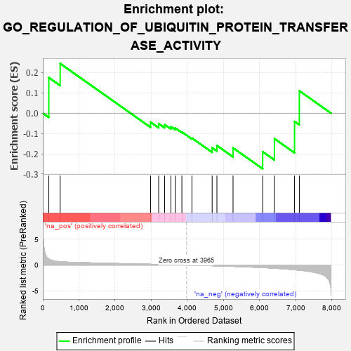
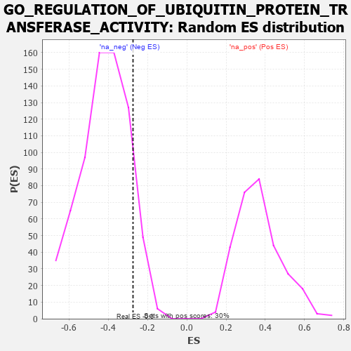

| | | Dataset | 7d |
| Phenotype | NoPhenotypeAvailable |
| Upregulated in class | na_neg |
| GeneSet | GO_REGULATION_OF_UBIQUITIN_PROTEIN_TRANSFERASE_ACTIVITY |
| Enrichment Score (ES) | -0.27415785 |
| Normalized Enrichment Score (NES) | -0.6567083 |
| Nominal p-value | 0.89127326 |
| FDR q-value | 1.0 |
| FWER p-Value | 1.0 |
Table: GSEA Results Summary

Fig 1: Enrichment plot: GO_REGULATION_OF_UBIQUITIN_PROTEIN_TRANSFERASE_ACTIVITY
Profile of the Running ES Score & Positions of GeneSet Members on the Rank Ordered List
| PROBE | GENE SYMBOL | GENE_TITLE | RANK IN GENE LIST | RANK METRIC SCORE | RUNNING ES | CORE ENRICHMENT | | 1 | AXIN1 | | | 166 | 1.159 | 0.1749 | Yes |
| 2 | CDC20 | | | 480 | 0.644 | 0.2443 | Yes |
| 3 | UBE2S | | | 2980 | 0.153 | -0.0440 | No |
| 4 | FZR1 | | | 3205 | 0.122 | -0.0516 | No |
| 5 | SMAD7 | | | 3369 | 0.093 | -0.0563 | No |
| 6 | PIN1 | | | 3543 | 0.069 | -0.0664 | No |
| 7 | SKP1 | | | 3663 | 0.049 | -0.0732 | No |
| 8 | FEM1A | | | 3847 | 0.021 | -0.0926 | No |
| 9 | ABL1 | | | 4125 | -0.027 | -0.1229 | No |
| 10 | LIMK1 | | | 4684 | -0.136 | -0.1702 | No |
| 11 | FBXW7 | | | 4816 | -0.161 | -0.1594 | No |
| 12 | PTEN | | | 5262 | -0.261 | -0.1712 | No |
| 13 | PLK1 | | | 6082 | -0.500 | -0.1897 | No |
| 14 | UBE2N | | | 6407 | -0.621 | -0.1256 | No |
| 15 | DNM1L | | | 6963 | -0.913 | -0.0411 | No |
| 16 | RAB1A | | | 7096 | -0.993 | 0.1100 | No |
Table: GSEA details [plain text format]

Fig 2: GO_REGULATION_OF_UBIQUITIN_PROTEIN_TRANSFERASE_ACTIVITY: Random ES distribution
Gene set null distribution of ES for GO_REGULATION_OF_UBIQUITIN_PROTEIN_TRANSFERASE_ACTIVITY